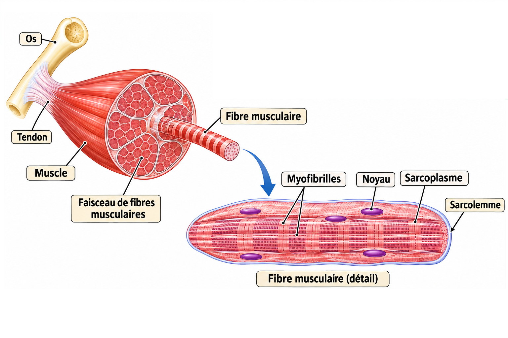
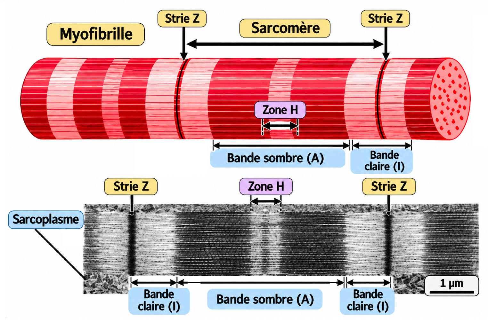
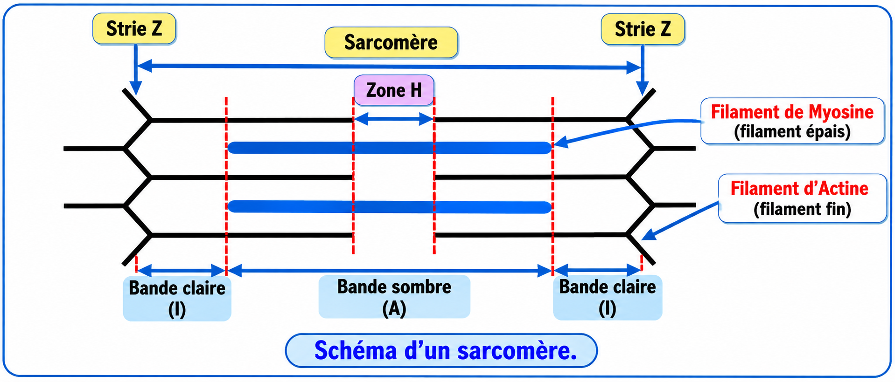
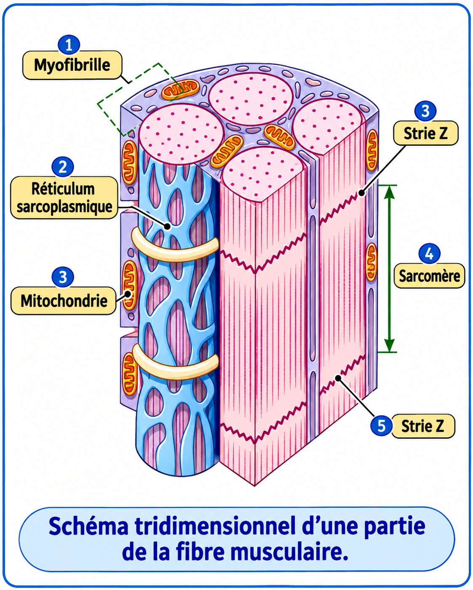
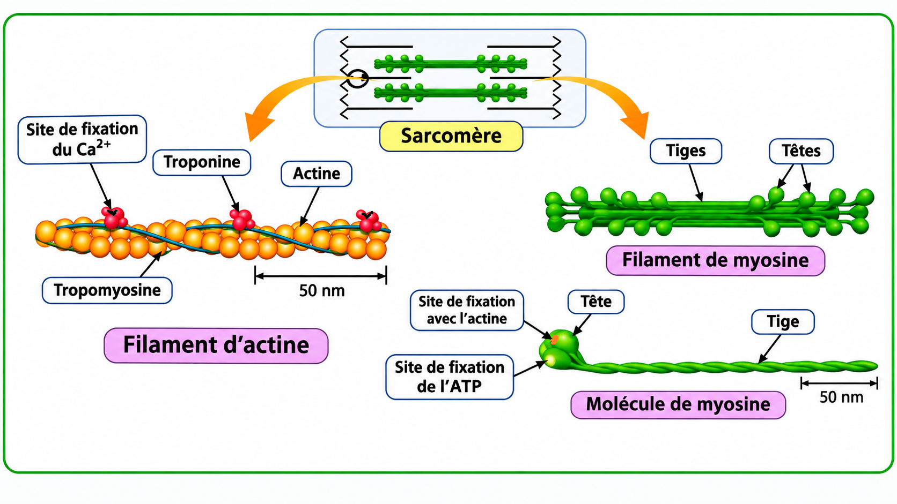

Structure et ultrastructure du muscle strié squelettique
À partir de documents scientifiques, nous allons étudier l'organisation du muscle strié squelettique, depuis le muscle entier jusqu'à la structure moléculaire des myofilaments.
Consigne : Observez chaque document, rédigez vos réponses, puis utilisez le bouton « Vérifier mes réponses → » pour consulter la correction.
1. Organisation du muscle strié squelettique

Question 1 — Décrivez l'organisation du muscle strié squelettique, depuis le muscle entier jusqu'aux myofibrilles.
Question 2 — Relevez les particularités structurales d'une fibre musculaire.
Question 3 — Quelle relation existe-t-il entre une fibre musculaire et une myofibrille ?
2. Organisation des myofibrilles

Question 4 — Décrivez l'aspect d'une myofibrille observée longitudinalement.
Question 5 — Précisez la position des stries Z par rapport aux bandes I.
Question 6 — Définissez un sarcomère et précisez ses limites.
3. Ultrastructure du sarcomère

Question 7 — Identifiez les deux types de myofilaments constituant un sarcomère.
Question 8 — Précisez la répartition des myofilaments au niveau des bandes A et I.
Question 9 — Expliquez la présence de la zone H au centre de la bande A.
Exploration complémentaire : Visualisez l'organisation spatiale des filaments grâce à notre animation tridimensionnelle.
Explorer le sarcomère en 3D →4. Organisation tridimensionnelle de la fibre musculaire

Question 10 — Décrivez la disposition des myofibrilles à l'intérieur de la fibre musculaire.
Question 11 — Précisez la disposition du réticulum sarcoplasmique par rapport aux myofibrilles.
Question 12 — Localisez les mitochondries à l'intérieur de la fibre musculaire.
5. Structure moléculaire des myofilaments

Question 13 — Décrivez la composition et les caractéristiques des filaments fins d'actine.
- L'actine : protéine principale du filament, qui présente des sites de fixation de la myosine.
- La troponine : protéine possédant des sites de fixation des ions Ca²⁺.
- La tropomyosine : protéine allongée le long du filament d'actine, qui masque au repos les sites de fixation de la myosine sur l'actine.
Question 14 — Décrivez la composition et la structure des filaments épais de myosine.
Question 15 — Précisez les particularités des têtes de myosine.
6. Construire le bilan de l'activité
Le muscle strié squelettique est organisé en faisceaux de fibres musculaires. Chaque fibre contient de nombreuses myofibrilles, constituées d'une succession de sarcomères. Chaque sarcomère comporte des myofilaments fins d'actine et des myofilaments épais de myosine.
École SVT — Activité 3, structure et ultrastructure du muscle strié squelettique.